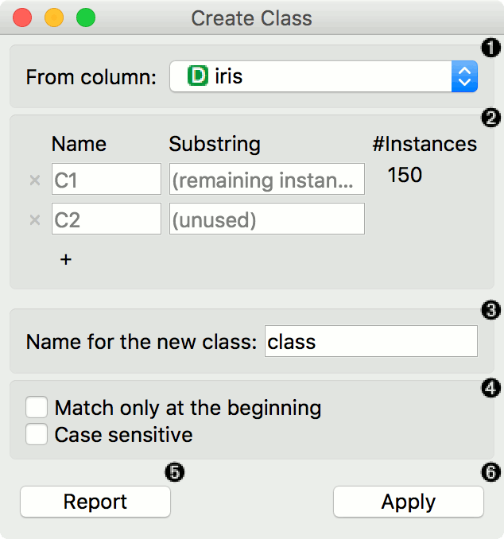
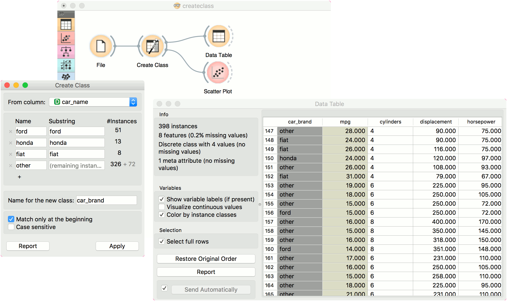

Create Class
Create class attribute from a string attribute.
Inputs
- Data: input dataset
Outputs
- Data: dataset with a new class variable
Create Class creates a new class attribute from an existing discrete or string attribute. The widget matches the string value of the selected attribute and constructs a new user-defined value for matching instances.

- The attribute the new class is constructed from.
- Matching:
- Name: the name of the new class value
- Substring: regex-defined substring that will match the values from the above-defined attribute
- Instances: the number of instances matching the substring
- Press ‘+’ to add a new class value
- Name of the new class column.
- Match only at the beginning will begin matching from the beginning of the string. Case sensitive will match by case, too.
- Produce a report.
- Press Apply to commit the results.
Example
Here is a simple example with the auto-mpg dataset. Pass the data to Create Class. Select car_name as a column to create the new class from. Here, we wish to create new values that match the car brand. First, we type ford as the new value for the matching strings. Then we define the substring that will match the data instances. This means that all instances containing ford in their car_name, will now have a value ford in the new class column. Next, we define the same for honda and fiat. The widget will tell us how many instance are yet unmatched (remaining instances). We will name them other, but you can continue creating new values by adding a condition with ‘+’.
We named our new class column car_brand and we matched at the beginning of the string.

Finally, we can observe the new column in a Data Table or use the value as color in the Scatter Plot.